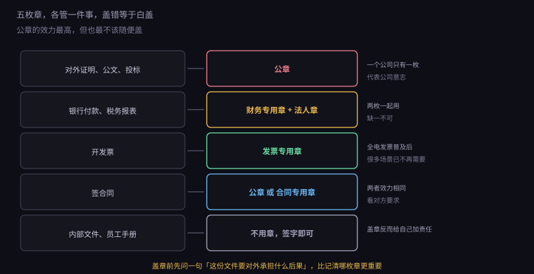
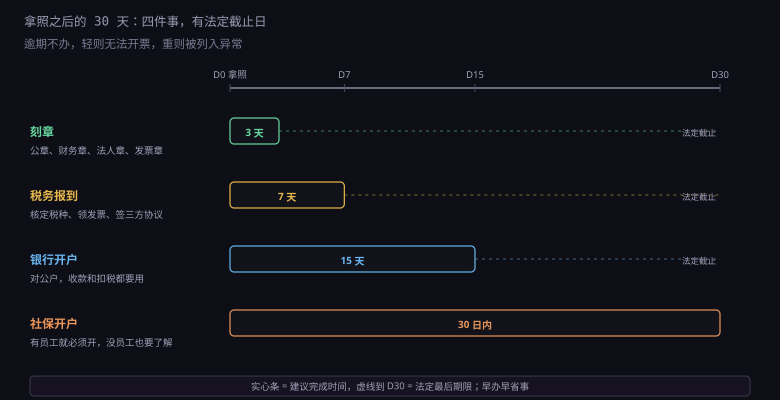
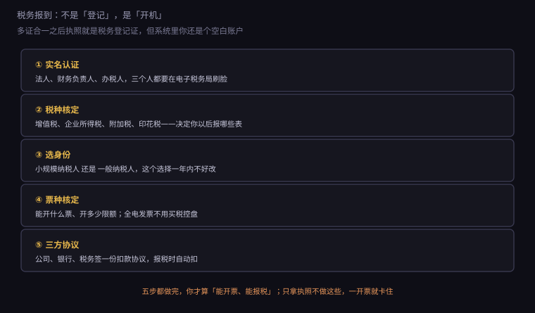

约 0.35 万字 · 3 张图 · 拿到执照那天，你其实还没法开业
章这个东西看起来很传统，但它在中国商业里仍然是效力的载体。 电子签名普及了很多年，很多场景还是认那个红圈。

公章：圆形，中间一颗五角星，下面一圈公司名。 它代表公司的整体意志，效力最高。 对外证明、投标、各种申请材料，盖的都是它。
正因为效力最高，公章也是最危险的。 谁拿到公章，谁就能以公司名义签合同、借钱、担保。 现实中的公司纠纷，一大半跟"章在谁手上"有关。 所以公章一般由法定代表人或者最信任的人保管，不能随便放在公共抽屉里。
财务专用章：方形或圆形，用于银行和税务。 去银行买支票、办付款、开一般户，都要盖它。 它通常和法定代表人章（俗称法人章，其实是个小方章，刻的是人名）配合使用， 一个管"公司同意"，一个管"人同意"。
发票专用章：椭圆形，用于开具发票。 纸质发票要在发票联和抵扣联上盖它。 但现在全电发票（数电票）普及之后， 很多场景已经不需要实体章了——开票时系统自动带电子签名。
合同专用章：可选，不是必须刻。 它的效力和公章一样，专门用于签合同。 有些公司刻它是为了分摊风险：合同章交给业务部门， 公章留在老板手里。
还有一枚常被忽略的：法定代表人章。 它刻的是人名，不是公司名，但法律效果等同于法定代表人签字。 银行开户、票据背书都离不开它。
以前刻章要跑公安局审批，现在流程简化了。
2019 年之后，大部分地区取消了公章刻制审批， 改成备案制：你找一家有资质的刻章店， 它刻完把章样上传到公安的印章管理系统备案， 你拿到章和一张备案证明。
备案的意义是：将来出现"这章是不是伪造的"争议时， 公安系统里能查到原始印模。 没有备案的章，效力会被质疑。
价格上，很多地方对新设企业有免费送首套章的政策 （政府买单，通常包含公章、财务章、法人章、发票章四枚）。 办执照的时候问一句，能省几百块。 自己去刻的话，一套大概三百到八百，材质不同价格不同。
数量上有个规矩：公章一般只能有一枚。 刻两枚公章是很麻烦的事——将来出现两份盖着不同公章的文件， 谁真谁假说不清，法院也难判。 财务章、发票章同理。
现在还有一种电子印章： 在政务平台上申领，用的时候通过 App 盖章， 盖出来的文件带数字签名和时间戳。 它和实体章有同等法律效力，签电子合同很方便。 建议开业时就一起办了，后面签线上合同会用到。
从拿到执照那天算起，有三十天。 这三十天里要办完四件事，其中三件有法定时限。

刻章：越快越好，建议三天内。 没有章，合同签不了、银行开户办不了， 后面所有事都卡住。
税务报到：建议七天内。 法定时限是三十日，但拖着的代价是你开不了票。 很多客户要求"先开票再付款"，你没票种就干不了活。
银行开户：建议两周内。 对公户是收款的必要条件，也是签三方协议扣税的前提。 开户要预约，有些银行排队要等一周。
社保开户：法定三十日内。 有员工就必须开。没员工的一个人公司， 法律上也要办理单位参保登记（这是"单位"的义务，不是"有员工"的义务）。
逾期不办的后果不是立刻罚款，而是"办不了事"： 开不了票、收不了款、报不了税。 等你想办的时候，会发现要先补一堆手续， 还可能因为"未按期申报"被列入异常。
很多人以为"多证合一"之后就不用管税务了，这是错的。
多证合一只是说：执照办下来，税务系统里自动有了你的登记信息。 但那个账户是空白的——没有税种、没有票种、没有申报方式。 要用起来，得做一次"首次办税"，业内叫"税务报到"。

第一步，实名认证。 法定代表人、财务负责人、办税人员，三个人都要在电子税务局做实名采集（刷脸）。 小公司常常是老板一个人兼任三个角色，那就认证一次、绑三个身份。
第二步，税种核定。 税务局根据你的经营范围和行业，确定你要交哪些税： 增值税、企业所得税、附加税（城建税、教育费附加、地方教育附加）、 印花税，可能还有房产税、土地使用税。 核定完，你的申报表清单就定下来了。
第三步，选纳税人身份。 小规模纳税人还是一般纳税人。这个选择影响很大，下一节细讲。 这里只提醒一句：别指望"以后再改回来"。 一般纳税人转小规模的政策时有时无，不要把它当成退路。
第四步，票种核定。 你能开什么票（普票、专票）、开多少限额（单张最高开票限额）、 每月领多少份。 现在全电发票不需要买税控盘、不需要领纸质票， 在电子税务局直接开，额度是系统给的。
第五步，签三方协议。 公司、开户银行、税务局三方签一份委托扣款协议。 签完之后申报的税款自动从对公户扣， 不用每次跑银行。
五步做完，你才算真的"能做生意"。 只拿执照不做这些，第一次开票就会卡在"无票种核定"上。
这是注册时最需要想清楚的一个选择，因为它的影响是长期的。
小规模纳税人：税率低（征收率 3%，目前有减按 1% 的优惠）， 但不能抵扣进项，开专票也受限（可以自开，但对方只能按你的征收率抵扣）。 年销售额超过 500 万会被强制转为一般纳税人。
一般纳税人：按行业适用 6%、9%、13% 的税率， 可以抵扣进项税，可以开专票。 但要求账务健全、要按月申报、进项票要管好。
怎么选？看你的客户是谁。
客户是企业、要求专票抵扣的：一般纳税人更合适。 你开 6% 的专票，对方能抵 6%，你的报价更有竞争力。
客户是个人、或者小微企业不在乎抵扣的：小规模更省事。 税率低，申报简单（很多地方按季申报）， 而且小规模有增值税免征额（月销售额 10 万以下免征）。
还有一个隐性因素：你的进项多不多。 做软件服务，主要成本是人力，没有进项票可抵， 那一般纳税人的 6% 就是实打实要交的， 不如小规模的 1%。 做贸易、做硬件集成，进项多，一般纳税人反而划算。
这个问题很多人搞不清，答案分两层。
第一层：单位参保登记是义务。 公司成立了，就是用人单位， 要在三十日内到社保经办机构办理单位参保登记。 这是《社会保险法》的要求，跟你有没有员工无关。
第二层：法定代表人要不要给自己交。 法律上，如果你和公司建立了劳动关系（发工资、受公司管理）， 公司就应该给你缴社保。 如果你不发工资、不作为员工， 实践中很多地方不强制，但一旦被查或者发生工伤， 麻烦会很大。
现实建议：给自己发一份工资，按最低基数交社保。 理由不只是合规：
一是医保。没有职工医保，生病全自费，这个风险比省下的社保费大得多。
二是养老累计年限。断缴会影响将来领取。
三是个税。工资是公司的成本，可以税前扣除，能降低企业所得税。
四是信用。有些资质、投标、贷款会看社保缴纳记录。
成本上，社保是单位和个人各承担一部分。 以最低基数算，单位部分大概每月几百到一千多（各地不同）， 个人部分从工资里扣。 这笔钱对小公司是负担，但它是"人在正常运转"的标志。
住房公积金也是法定义务。 《住房公积金管理条例》要求单位在设立之日起三十日内办理缴存登记。
但现实执行比社保松：很多小微企业没开公积金户， 也没人查。原因是公积金管理中心的执法力度不如社保， 而且员工自己不追究就没人提。
要不要开？看你招不招人。 如果招人，尤其招有经验的员工， 公积金是实打实的福利（单位缴的部分进员工账户，能用来买房贷款）。 不开，招人时会吃亏。
如果就自己一个人干，可以先不开， 等真要招人时再办。但心里要清楚： 这是一项应办未办的手续，不是"不用办"。
最后把顺序理一遍，顺便说几个容易踩的坑。
正确顺序： 领照 → 刻章（含备案）→ 银行开户 → 税务报到（签三方协议需要银行账户） → 社保开户 → 公积金（可选）。
注意税务报到和银行开户的依赖关系： 签三方协议要填对公账号， 所以银行开户最好在税务报到之前完成， 或者报到时先跳过三方协议，开户后再补。
坑一：以为刻章要去公安局。 现在不用了，找有资质的刻章店即可，它会联网备案。
坑二：刻了两枚公章。 有人为了方便，刻一枚放公司一枚带身上。 将来出现两份文件各盖一枚，谁也说不清哪份有效。
坑三：税务报到拖着不办。 执照下来三个月不去报到，可能被认定为"未按规定办理税务登记"， 虽然多证合一之后这个风险小了，但"未按期申报"的罚款是真的 （即使零收入也要零申报，不报就是逾期）。
坑四：以为没收入就不用管税。 零申报也是申报。连续几个月不报， 会被列入非正常户，法人上黑名单。 这一块 8.3.4 会专门讲报税日历。